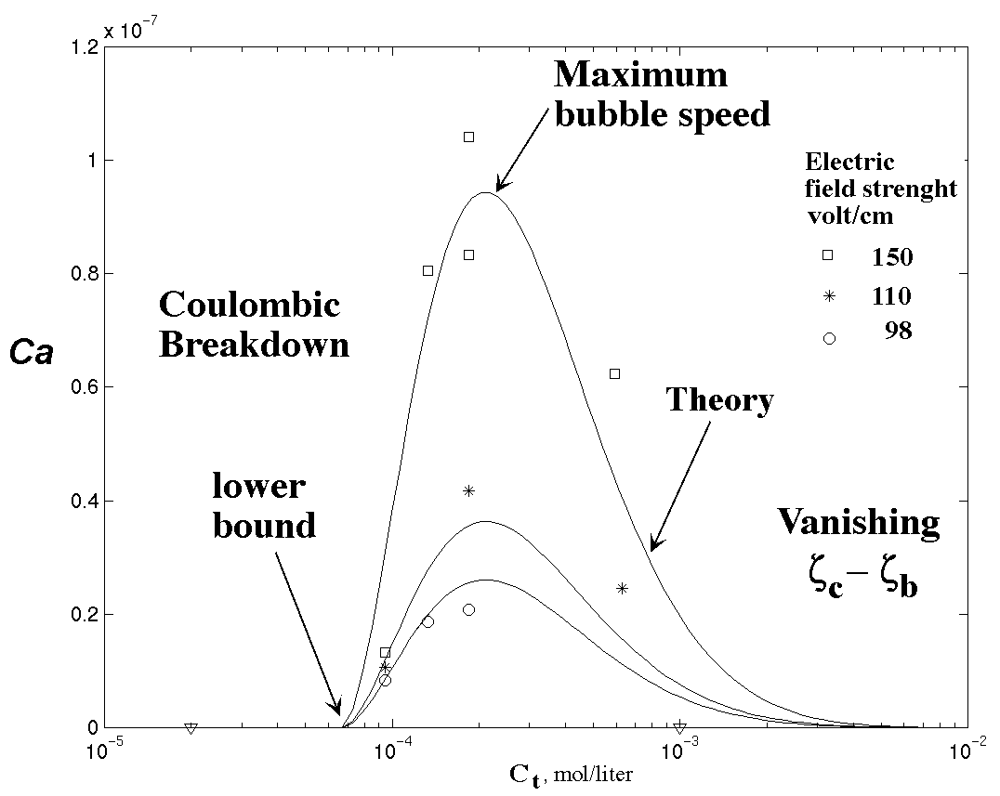
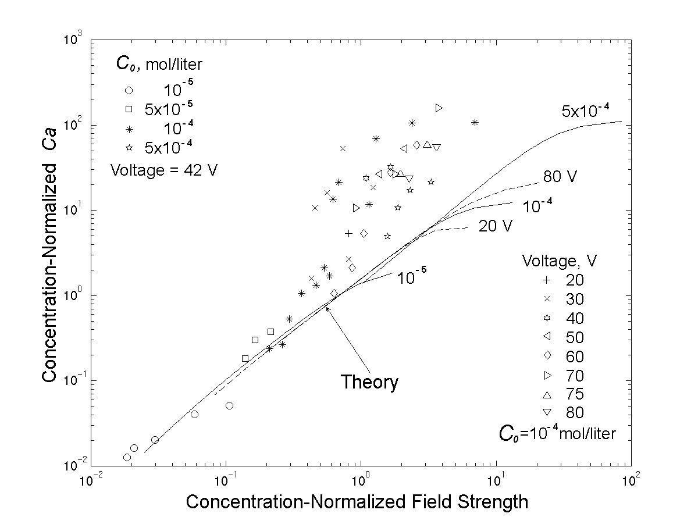
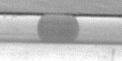

Reactor
transport, mixing and separation design strategies cannot be easily scaled
to micron or sub-micron scales due to new physical forces/phenomena that
become important at these scales (capillary, wetting, double-layer effect)
and because inertial transport/mixing is now ineffective. Our interest
lie mainly in microreactors that are driven electrokineticaly. We have
begun a project to achieve mixing by generating vorticies with a
microgranule of ion-exchange resin that causes ion separation in electrokinetic
flow to
|
|
produce a secondary field. This tangential secondary field combine with the primary one to produce the vortices.
Since
the zeta-potential in a micro-channel is a concentration dependent, we
can achieve miscible fingering by driving a low concentration band against
a high-concentration by electrokinetic flow. Properly optimized, such fingering
instability can be used to enhance mixing between two streams.
|
Miscible fingering instabilities in the KCl - KMnO4 system |
We
have also invented a new walve for electrokinetic flow
|
|
and developed a new fabrication method for a micro-channels using drop spinning techniques.
Electrokinetic
flow can transport electrolyte very efficiently through micro-channel
as the velocity gradient lies only in the microscopic double layers on
the capillary. However, such an advantage is lost on non-electrolyte organic
liquids. We have deviced a means of transporting non-polar organic liquid
drops by piggy-backing them on a wetting electrolyte solution.
|
The position of a single air bubble at different moments of time from overlapping images. The arrow shows the direction of motion. |
By
introducing an ionic surfactant with a charge different from the capillary
surface charge, we can reduce the electrolyte flow through the film surrounding
the drop, such that it is lower than the flow behind the drop. The surfactants
lower the electric field in the film and produces an electrokinetic flow
opposite in direction than that in the capillary double layer - both mechanisms
conspire to reduce film flow. By matched asymptotics, we have determined
the electrolyte concentration window and the throughput of this new electrokinetic
transport mechanism for non-electrolyte solutions.
| 
The dependence of Ca on the total ion concentration |
| 
Collapse of the measured bubble speed by the correlations of our theory with normalized field strength. The low-field data typically correspond to long bubbles where the theory is more valid. |
We
have also exploited the charge separation along the drop to induce rapid
drop breakup:
|  | |
|
Breakdown
of droplts of n-octane in 10-4 KCl solution in micro-channel.
Publications: Electrokinetic Displacement of Air Bubbles in Microchannels
(to appear in the Colloid and Surface Science)